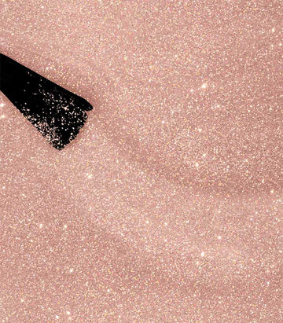
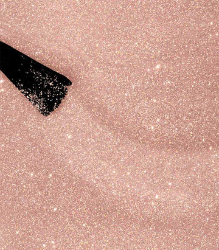

GELLAC KLEUREN
KIES JOUW FAVORIETEN UIT 200+ KLEUREN
titel - mag je verbergen


 



WAT IS PINK GELLAC?
Pink Gellac is de Nederlandse marktleider op het gebied van salonkwaliteit gel nagellak! Droog de gel nagellak onder een led- of uv-lamp en geniet 14 dagen van prachtig glanzende nagels. Alle nagellak kleuren moeten 60 seconden onder een ledlamp of 120 seconden onder de uv-lamp worden uitgehard.
HOE LANG BLIJFT PINK GELLAC ZITTEN?
In tegenstelling tot traditionele nagellak die slechts 2 dagen mooi blijft zitten, lijft Pink Gellac 14 dagen perfect op de nagels zitten. Je kunt de gel nagellak van Pink Gellac eenvoudig zelf thuis aanbrengen en verwijderen. Lees het Pink Gellac blog of bekijk de tutorials voor extra tips om de gellak kleuren mooi aan te brengen. Wil je meer weten over Pink Gellac en onze gellak kleuren? Download dan onze gratis app in de App Store of Google Play Store!
ONTDEK ONZE NIEUWE GELLAK KLEUREN
Pink Gellac is de betrouwbare online webshop voor al jouw gel nagellak en . Pink Gellac biedt meer dan 200 kleuren gellak, met ieder een eigen verhaal. Om de 3 tot 4 maanden introduceren wij een nieuwe collectie gellak kleuren met een uniek thema. Elke collectie van Pink Gellac is geïnspireerd op de laatste beauty- en fashiontrends. Ben je nieuwsgierig naar de de gellak kleuren van dit moment? Check dan onze gehele assortiment met alle gellak kleuren.
GELLAK KLEUREN KOPEN PER SEIZOEN
Ben je op zoek naar een specifieke kleur gellak voor een speciale gelegenheid of outfit? Bekijk het overzicht per kleur en je navigeer snel en eenvoudig naar de gewenste kleur. Stem de kleur gellak af op de tijd van het jaar. Kies een van onze knallende zomerkleuren om jouw sun-kissed skin te accentueren. Onze feestelijke winterkleuren zijn perfect om tijdens de decembermaand te proberen. Met onze nagellak in pasteltinten kom je alvast in de lentesferen. In het najaar zit je goed met gellak in warme herfstkleuren. Laat je inspireren door de gellak kleuren van het seizoen!
BASE- & TOP COATS VOOR HET BESTE GELLAK RESULTAAT
Om te zorgen dat je gellak kleur goed blijft zitten, is het belangrijk dat je ook een base- en top coat gebruikt. Als je onze instructies volgt, garanderen wij 14 dagen prachtige nagels. Gebruik eerst een base coat voordat je de gekleurde gellak op je nagels aanbrengt. Zo zorg je ervoor dat de gellak kleur goed hecht. Breng vervolgens de kleurloze top coat over de gekleurde gellak aan voor een prachtige, glanzende finish. Of voeg een vleugje glam toe door een gellak kleur te combineren met een top coat met glitters!